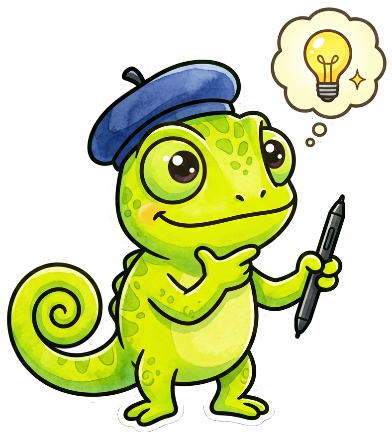

CSS Styling, Layouts & Web Page Integration¶
Summary¶
Applies CSS flexbox/grid layout styling, dynamic element positioning, responsive resizing, and iframe embeds. Students will gain practical hands-on experience by building interactive sketches and visual experiments that demonstrate these concepts.
Concepts Covered¶
This chapter covers the following 17 concepts from the learning graph:
- DOM Mouse Pressed Event
- DOM Changed Event
- DOM Input Event
- Parent Container Attachment
- Child Element Removal
- Canvas Parent Wrapper
- Hide DOM Element
- Show DOM Element
- Select HTML Element
- Select All HTML Elements
- HTML5 Canvas Integration
- CSS Flexbox Layout
- CSS Grid Styling
- Responsive Layout Handler
- DOM Drag File Event
- File Input Button
- Embedded iFrame Canvas
Prerequisites¶
This chapter builds on concepts from:
Welcome to Chapter 16!

Welcome to Chapter 16, artists! Your sketch is a masterpiece, but it deserves a beautiful frame to hang in. We'll be learning how to seamlessly blend your canvas into stunning, fully-styled web pages. Get ready to make your art look incredibly professional!
Welcome back, artists! So far, our p5.js sketches have lived in isolation, floating aimlessly on a blank white webpage. But in the real world of web development, a canvas is just one piece of furniture in a much larger room. Think of building a webpage like designing the interior of a house. When you just throw furniture into a room without a plan, it is a mess.
The Architecture of the Web: Interior Design Metaphor¶
To become a master web developer, you must learn to integrate your interactive canvas with standard HTML elements—buttons, sliders, text inputs, and other media—and organize them using modern CSS techniques. With CSS Flexbox Layout and CSS Grid Styling, you have the power of a professional interior designer. You can align, distribute, and structure your elements exactly where you want them.
Integrating the Canvas into the Room¶
By default, when you call createCanvas(), p5.js simply appends an HTML5 Canvas Integration element to the very bottom of your webpage's <body>. If you have headers, paragraphs, or sidebars on your page, the canvas just awkwardly gets shoved below them.
To take control of this, we need to build a "frame" on the wall to hang our canvas. We do this by creating a generic HTML <div> container with an ID, such as <div id="sketch-holder"></div>.
Inside our p5.js code, we can grab this specific container using the Select HTML Element function, often accessed via select('#sketch-holder'). Once we have a reference to the container, we use Parent Container Attachment to explicitly tell the canvas to live inside that div.
function setup() {
let myCanvas = createCanvas(800, 600);
// Canvas Parent Wrapper
myCanvas.parent('sketch-holder');
}
If you have multiple paragraphs or buttons you want to style at once, you can use the Select All HTML Elements function (selectAll('.my-class')), which returns an array of elements you can loop through and manipulate simultaneously.
Reacting to the User¶
A beautiful room is useless if the light switches don't work. We need to hook up our UI elements to event listeners so they actually do something.
When a user clicks a button, we capture that interaction using a DOM Mouse Pressed Event. Unlike the global mousePressed() function that triggers when you click anywhere on the canvas, a DOM-specific event only fires when the user clicks the exact HTML element.
let myButton;
function setup() {
myButton = createButton('Change Color');
// DOM Mouse Pressed Event attached to the specific button
myButton.mousePressed(changeColor);
}
function changeColor() {
background(random(255));
}
For text inputs or dropdown menus, we use the DOM Changed Event (.changed()). This event fires the moment the user hits 'Enter' or clicks away from the input, signaling they have finished their thought.
If you need real-time, instantaneous feedback—for example, expanding a shape dynamically as the user drags a slider—you must use a DOM Input Event (.input()). This fires continuously, dozens of times a second, as the slider moves, providing butter-smooth interactivity.
Wait, what's the difference?

Think about it like this: your sketch must decide whether to listen to a finished sentence or react to every single syllable as it is spoken. Notice how choosing between a delayed.changed() event versus a continuous .input() event fundamentally alters the architectural rhythm and performance profile of your interaction loop?
Mastering the Layout: Flexbox and Grid¶
Once your canvas, buttons, and sliders are attached to the webpage, you need to arrange them.
Historically, web developers used clumsy tricks like "floats" and tables to position elements. Today, modern CSS provides two incredibly powerful layout engines.
CSS Flexbox Layout is designed for one-dimensional layouts—arranging items in a single row or a single column. Imagine placing a sofa, a coffee table, and a TV stand in a straight line against a wall. Flexbox allows you to automatically distribute the empty space between them evenly, or push them all to the center, regardless of how wide the screen is.
CSS Grid Styling is designed for two-dimensional layouts—defining rigid rows and columns simultaneously. It is exactly like drawing an architectural floor plan. You can define a grid with three columns and two rows, and explicitly say, "Put the canvas in row 1 spanning all three columns, and put the sliders in row 2."
Diagram: DOM Layout Explorer¶
Run DOM Layout Explorer Fullscreen
MicroSim: DOM Layout Explorer
MicroSim: DOM Layout Explorer
Goal: Create an interactive space where students can toggle between Flexbox and Grid behaviors.
Features:
- A dropdown menu to select between display: flex and display: grid.
- A set of 5 colored <div> blocks representing UI elements.
- Sliders to adjust justify-content (for flexbox) or grid-template-columns (for grid).
- As the user resizes the browser window, the blocks visually reflow in real-time, demonstrating how the layout engine handles empty space.
Making it Responsive¶
A well-designed room shouldn't break if the walls suddenly shrink. Your web application will be viewed on massive desktop monitors and tiny vertical phone screens.
To handle this gracefully, we use the windowResized() function to trigger a Responsive Layout Handler. Inside this function, you can check the new windowWidth and adjust your canvas or UI accordingly.
Sometimes, an element that looks great on a desktop is too cluttered for a mobile phone. You can use the Hide DOM Element function (element.hide()) to temporarily make an element invisible, collapsing its space entirely. When the user rotates their phone or expands the window back to a desktop size, you can bring it back using the Show DOM Element function (element.show()).
If a DOM element is permanently unnecessary—perhaps a "Loading..." spinner that finishes its job—you should use Child Element Removal (element.remove()). Unlike hide(), remove() completely deletes the element from the computer's memory, freeing up performance resources.
Cleaning Up!
 Want to save memory and boost performance? If a DOM element will never be used again (like a one-time 'Loading' spinner), always use
Want to save memory and boost performance? If a DOM element will never be used again (like a one-time 'Loading' spinner), always use .remove() instead of .hide(). Hiding elements leaves them secretly consuming resources in the background; removing them deletes them from the DOM entirely!
Uploading and Embedding Media¶
To make your sketches truly personal, you often want users to be able to upload their own images or data.
The most straightforward way is to generate a File Input Button using p5.js's createFileInput() function. This creates a standard "Choose File" button. When the user selects an image from their hard drive, the button reads the data and passes it to a callback function where you can draw it onto your canvas.
For a more modern, seamless experience, you can use the DOM Drag File Event. Instead of clicking a button, the user simply drags an image file from their desktop and drops it directly onto the web browser window. p5.js can intercept this "drop" event, read the file, and instantly use it as a texture or background.
Finally, what if you want to include content from an entirely different website—like a YouTube video, a Google Map, or another p5 sketch—inside your application? You can use an Embedded iFrame Canvas. An iframe is literally a window cut into your webpage that looks through to another URL.
Beware the iFrame Trap!
Watch out for CORS errors! Browsers heavily restrict Cross-Origin Resource Sharing, meaning you cannot easily read variables from an external iframe. If you absolutely must send data between an iframe and your main sketch, you will need to research and implement the window.postMessage() API rather than relying on direct variable access.
Diagram: Responsive Dashboard Builder¶
Run Responsive Dashboard Builder Fullscreen
MicroSim: Responsive Dashboard Builder
MicroSim: Responsive Dashboard Builder
Goal: Allow students to build a mini-dashboard using DOM elements.
Features:
- A central canvas area surrounded by a CSS Grid.
- A "File Input Button" that allows the student to upload a local image, which is instantly drawn to the canvas using a "DOM Drag File Event".
- Buttons to hide() or show() a side panel containing an "Embedded iFrame Canvas".
Conclusion¶
By mastering the integration of HTML DOM elements, CSS styling, and responsive event handlers, you are no longer just writing isolated scripts. You are engineering fully-fledged web applications. Your interactive canvas can now talk to buttons, react to sliders, process file uploads, and gracefully resize to fit any screen in the world.
Chapter Complete!
 Fantastic work! You just mastered integrating p5.js with HTML5 structures, controlling DOM Element visibility, and engineering responsive CSS Flexbox and Grid Layouts. You are officially building fully-fledged web applications!
Fantastic work! You just mastered integrating p5.js with HTML5 structures, controlling DOM Element visibility, and engineering responsive CSS Flexbox and Grid Layouts. You are officially building fully-fledged web applications!